Fig. 02.1
AI agents for assistants, self-service and automation
Create, configure and automate AI agents and workflows, then put them in front of customers and staff.
Learn more about Agents
Technical details for Agents
Foundation · Suite · Services
INDICE Platform
INDICE Platform brings together what that takes: an open-source foundation, a suite of six ready-made products, and the engineers who build alongside you. Start small and scale, in the cloud or on your own infrastructure.
§ 01Platform Foundation
The technological base of all our solutions: open-source Indice libraries, and the engineering expertise of the team that builds on them every day.
Proven, reusable building blocks that make software faster to build and more secure. They are published on NuGet and npm and developed in the open.
Years of software development experience and well-established company practices, carried into every library and every delivery.
Begin with a single modular application and split it into services as you grow. Multitenant design is part of the foundation, so the same code can serve one organisation or many.
Any operating system, environment or orchestrator: IIS, Nginx, Kubernetes, AKS, EKS, Azure Container Apps and Azure Web Apps.
Use the stores you already run: major relational databases such as PostgreSQL and SQL Server, and document stores such as Redis and Elastic.
Traces, metrics and logs through first-class OpenTelemetry integration, into the monitoring tools you already use.
Built on .NET and Angular, technologies your team can hire for, support and keep for the long term.
§ 01Best practices, built in
Run high-throughput APIs, workers and agents securely. Connect your services to the outside world. Secure and harden your product. The libraries carry the practices, so your team does not rebuild them for every project.
Plate I
One foundation under every product.
Every product in the suite is assembled from the same open-source Indice libraries, so the product you add next, or the one you build yourself, joins the same identity, hosting and extension patterns.
§ 02Platform Suite
Ready-made products for common business needs: AI agents, case workflows, identity, messaging, risk scoring and background processing. Adopt one, combine several, or build your own product on top of them.
Fig. 02.1
AI agents for assistants, self-service and automation
Create, configure and automate AI agents and workflows, then put them in front of customers and staff.
Fig. 02.2
Case management and back-office workflows
Run applications, requests and approvals as configurable case types.
Fig. 02.3
Identity and access management
Sign in staff, customers and partners with MFA and device trust.
Fig. 02.4
Multichannel campaigns and notifications
Send campaigns and transactional messages on every channel.
Fig. 02.5
Real-time risk scoring for transactions and activity
Score payments, logins and account changes before they commit.
Fig. 02.6
Background jobs, queues and scheduling
Run scheduled and queued background work, and watch it from one dashboard.
§ 02Product by product
What each product does, the features that set it apart and what it looks like in use.
Agents is a product for creating, configuring and automating AI agents and workflows, and putting them in front of people. A router picks the right agent for every message: to answer from your documents, act in other systems through tools, or guide someone through a multi-step flow. Dex, the assistant in the screens below, is built with it.
Point left or right to browse. Select a screen to enlarge it.
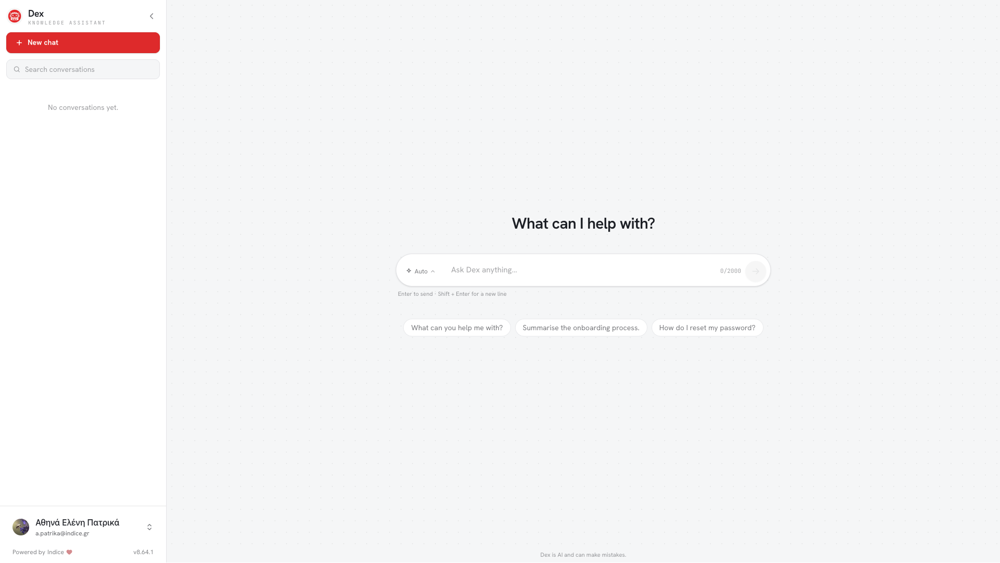
.png)
.png)
Cases runs form-driven processes, such as applications, service requests and approvals, on one record shared by customers and back-office staff. A new process is configuration, not a development project.
Point left or right to browse. Select a screen to enlarge it.
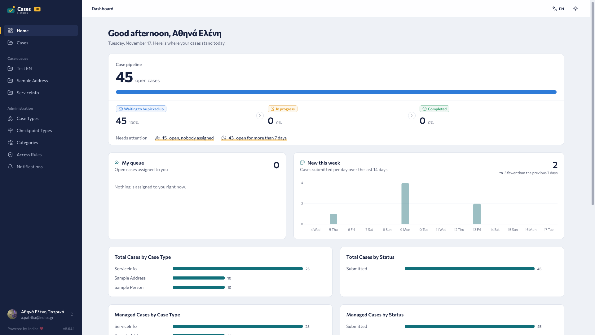
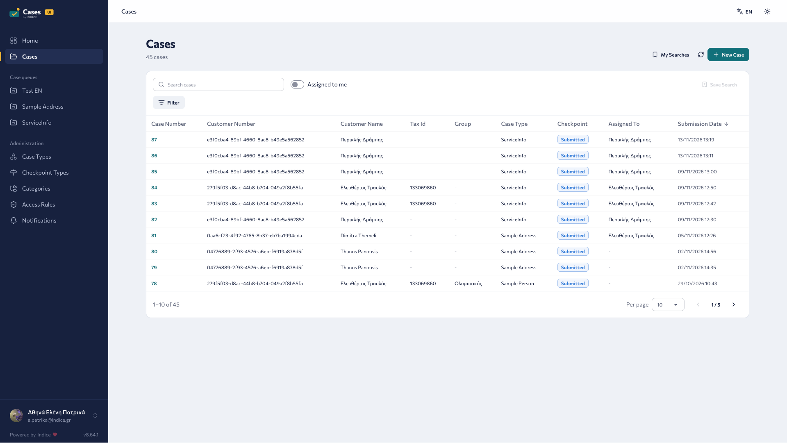
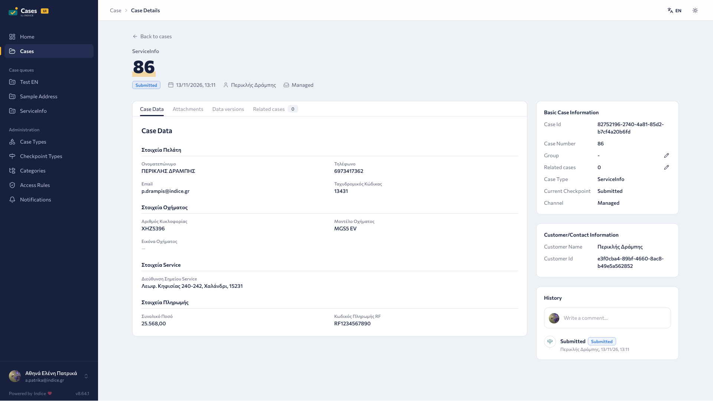
IAM is your own identity provider: one sign-in for workforce, customers and partners, with multi-factor authentication, trusted devices, audit trails, self-service account pages and an admin console. It speaks OpenID Connect and OAuth2, so any standard application can connect to it.
totp and mfa for step-up, device_authentication for registered devices, delegation to act on behalf of a user, and urn:indice:guest for anonymous app installs.IExtensionGrantValidator and IIdentityValidationActivity let you add grants, post-login steps, MFA methods and log fields as C# classes in your own host.Point left or right to browse. Select a screen to enlarge it.
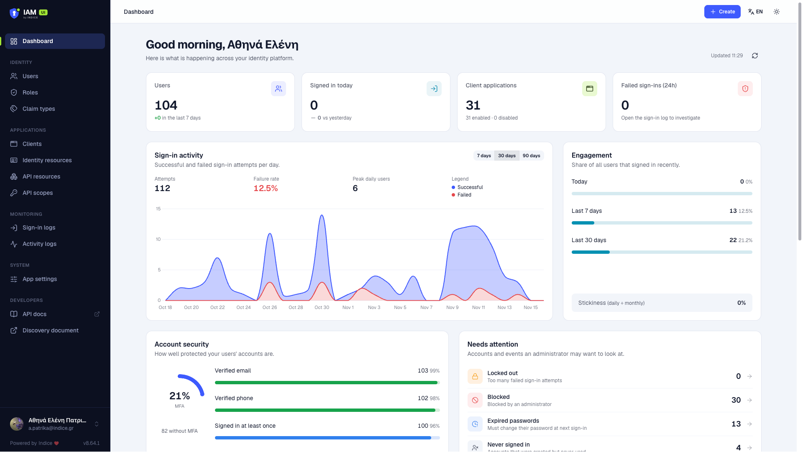
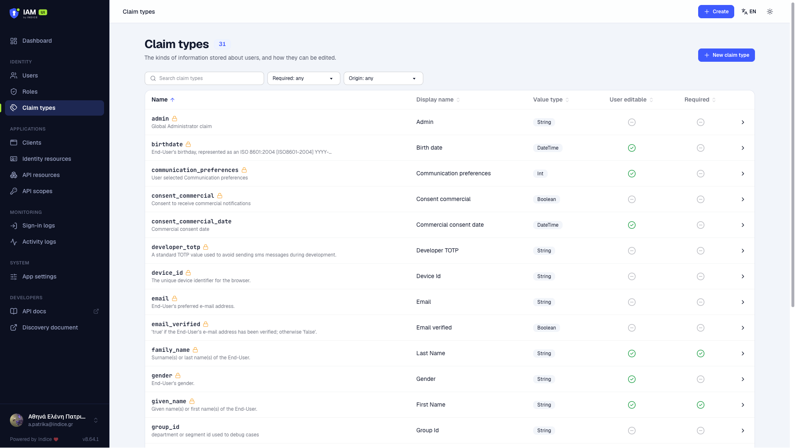
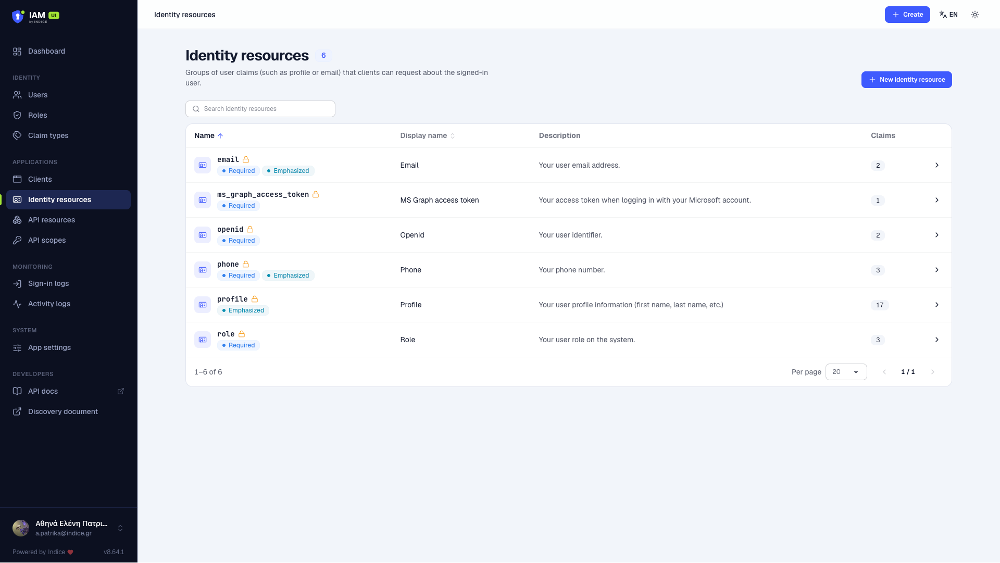
Messaging delivers marketing campaigns and transactional messages, such as one-time codes, receipts and alerts, over in-app inbox, push, email and SMS or Viber. Both run through one pipeline, with the same templates, audiences, recipient preferences and analytics.
Point left or right to browse. Select a screen to enlarge it.
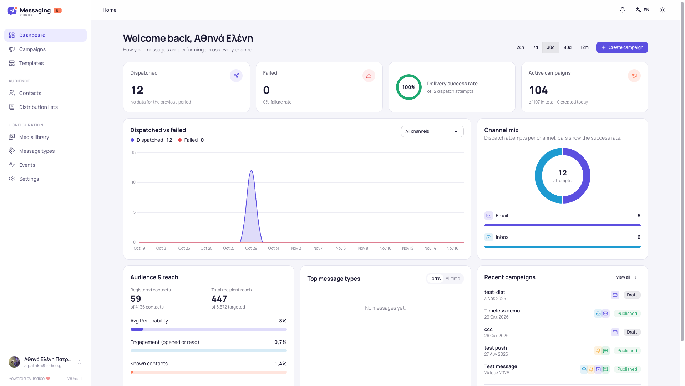
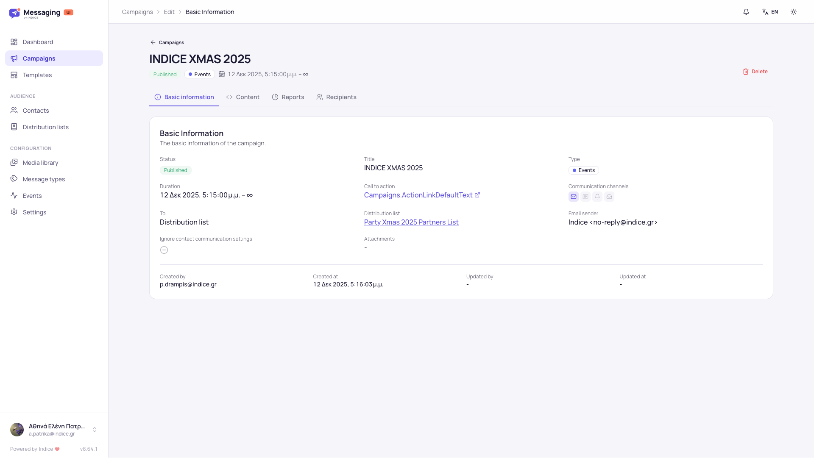
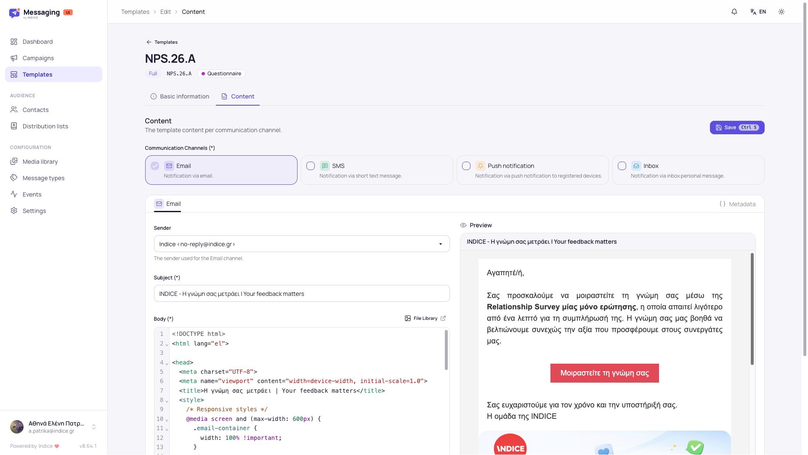
Risk scores operations such as payments, transfers, logins and profile changes in real time, before your application commits them. The application then lets the operation through, asks for extra verification or blocks it.
Point left or right to browse. Select a screen to enlarge it.
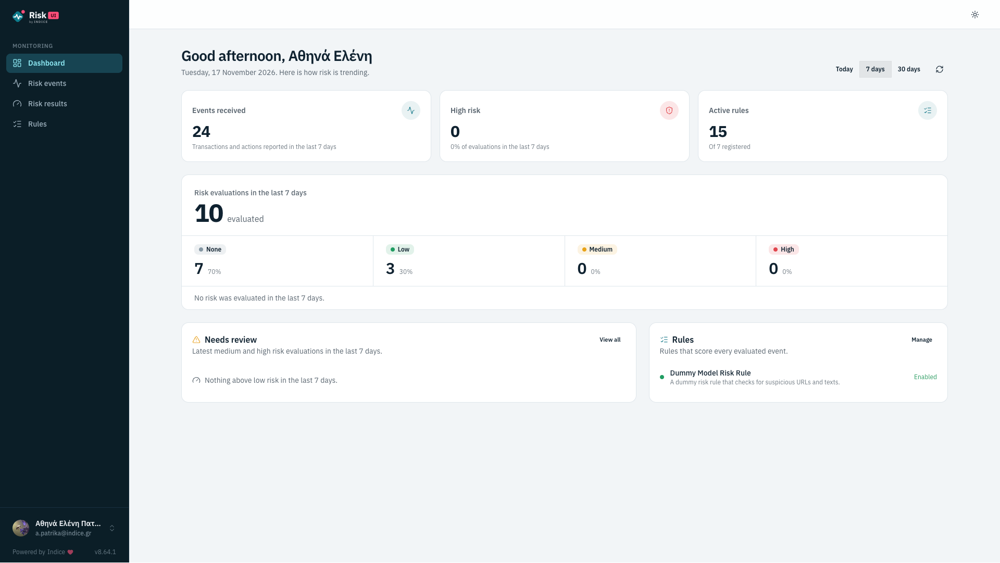
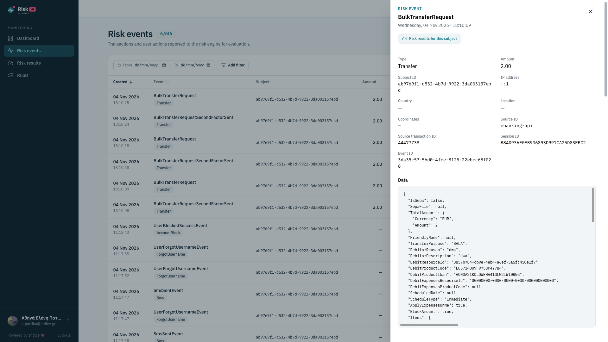
_page=1&filter=riskLevel__eq__None.png)
Workers runs the background work every system needs: scheduled jobs and queue-driven processing, reliably across several instances. Operators see queues, scheduled tasks, servers and locks on one dashboard, and can requeue or run work themselves.
Point left or right to browse. Select a screen to enlarge it.
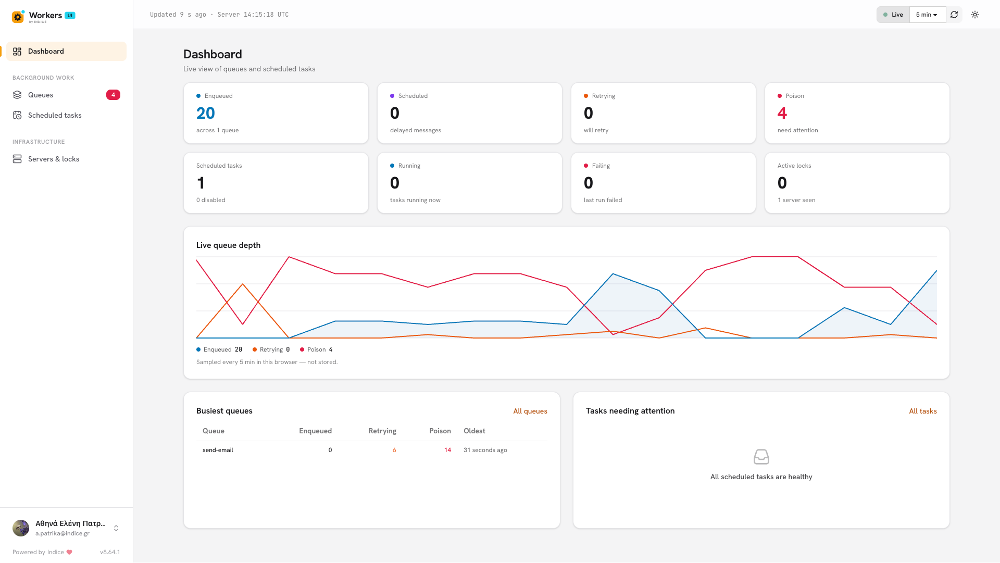
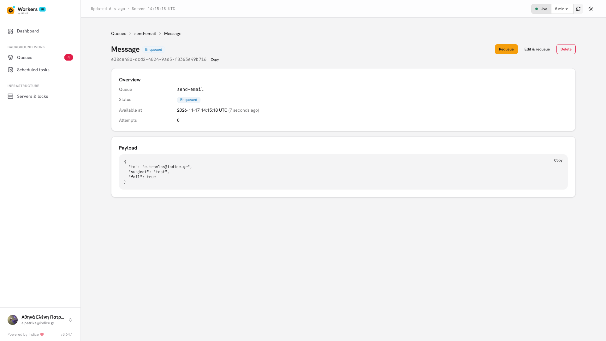
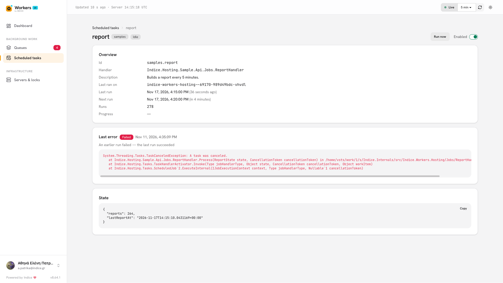
§ 03Platform Services
The team behind the foundation and the suite works on your project. We build your own solutions on top of the platform or beside it, connect them to the systems you already have, release them to the cloud or to your own infrastructure, and keep everything running after go-live.
§ 03What we do
What the partnership covers, and what each part gives you. All of it stands on the foundation and the products described above.
Tailored to you, built on what already works.
Software designed around your needs, on the same foundation as our own products. Identity, messaging, workflows and background jobs are already solved, so the effort goes into what is specific to your business.
The suite, working inside your systems.
The Platform Suite products connected to your systems and processes, and shaped to the way your organisation works, without forking them.
Released with care, monitored continuously.
How software reaches production matters as much as how it is written. Our DevOps practice covers cloud infrastructure, release management and monitoring: proven methods that keep your applications stable and available, in the cloud or on your own infrastructure.
Still with you after go-live.
Going live is where daily operation starts. We keep your software current and secure, and we are there when something needs attention.
We know the rules you work under.
In-depth knowledge of the sector’s requirements, regulations and particularities. It shows in the platform itself.
§ 03How we work
Start with a single product or with a whole solution. The path is the same, and it does not end at go-live.
We start from what you want to build, the systems you already have and the regulations you work under.
Together we shape the solution: which products fit, what is integrated and what is built new.
Our engineers develop and integrate, alongside your team or delivering the whole solution.
We release it to the cloud or to your own infrastructure, monitored from the first day.
We stay on with new features, security updates and technical assistance.
Both, in whichever order suits you.
Each product in the suite stands on its own, so you can start with one: IAM for sign-in, Cases for a back-office process, Messaging for notifications. You fit it to your organisation without forking it, through configuration and through extension points such as risk rules, workflow steps, sign-in steps and message providers, and by replacing pages and interface text.
What is specific to your business is built new, on the same open-source foundation the products are built on. Every product you add, and everything you build, reuses the same hosting, identity and extension patterns, so the second step is easier than the first.
See the Platform SuiteWhere it runs, where the data lives and which vendors it talks to are your decisions.
The platform runs in the cloud or on your own infrastructure, on any operating system, environment or orchestrator. It keeps its data in databases you host: PostgreSQL or SQL Server, with Redis and Elastic where a document store fits. In IAM, tokens are signed with your own certificate. In Risk, IP addresses are resolved on your own servers and lookups never leave the host.
The foundation libraries are open source, published on NuGet and npm and developed in the open. The products speak open standards, OpenID Connect and OAuth2, OpenAPI 3.1, OpenTelemetry and the Model Context Protocol, so standard applications and tools connect to them. Email, SMS and push providers are settings, and so is the AI model.
See the Platform FoundationAgents is the suite’s AI product, and it is built to face customers.
Agents is a tool for creating, configuring and automating AI agents and workflows. A router picks the right agent for each message: to answer from your documents and list its sources, to act in your systems through tools, or to guide someone through a multi-step flow. Cases and IAM already work as its tools, and you choose the model: Azure OpenAI, Azure AI Foundry, OpenAI or one you host.
The controls matter as much as the model. The knowledge agent declines when your documents cannot support an answer. A workflow pauses for a person when it needs a choice, a one-time code or a confirmation. A one-time code comes before any personal record, personal data is masked before it reaches the model, and usage limits are settings.
See AgentsWe stay on, and much of the daily change never needs a release.
Day-to-day change is in the hands of your own operators. They adjust risk limits from the console, design and publish workflows in the browser, edit message templates beside a live preview, and requeue or pause background work from a dashboard.
The rest we carry with you: releases, monitoring, new features as your requirements change, regular security updates with CVE patching, and immediate technical assistance. Traces, metrics and logs go through OpenTelemetry into the monitoring tools you already use, so your team sees what ours sees.
See Platform Services§ 05Contact
Request a demonstration focused on your processes, your systems and what you want to build.